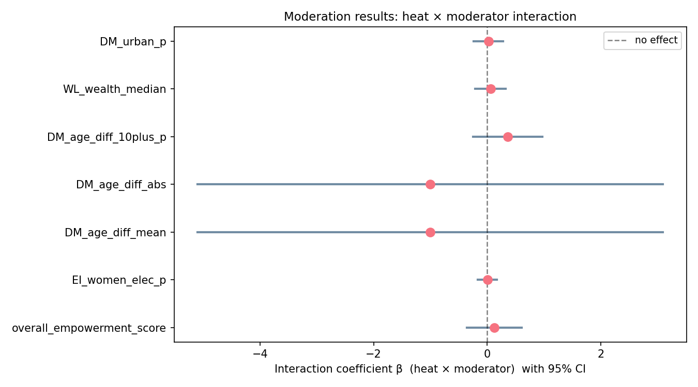

Exploring empowerment, urban heat island effects, wealth, cooling (electricity), and age gaps as moderators.
Are hotter-than-usual years within a region associated with increased prevalence of domestic violence?
I coded empowerment as a levelled composite score.
All these variables were weighted equally, but autonomy, education, etc. were themselves composite scores. I did this so that the domain that was simply measured with more questions wouldn't determine the result, but to have them all have equal impact. Some variables were measured on different scales (e.g. years of education). I transformed those into percentages of the max value in the data.
As mentioned, I weighted the domains the same.
I think that's theoretically debatable and could be revised in the future.

Comparison of the effects of different moderators.